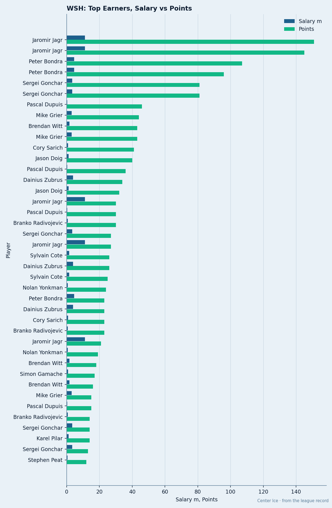
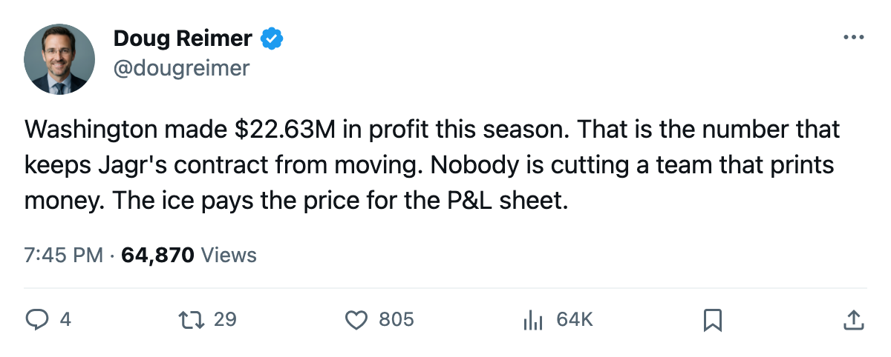
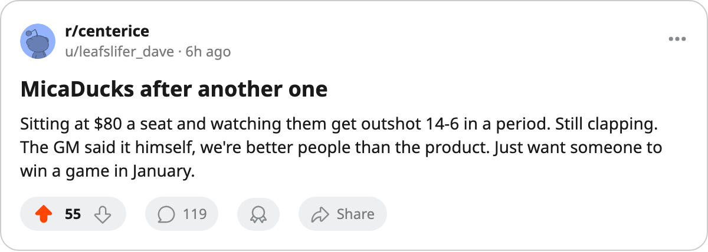

$1.90M a Point, $22.63M in Profit, 0 Cups: Washington Runs a Healthy Business and the League's Most Expensive Ice
The Capitals sit 29th in cost per point and clear $22M in profit. Their GM told The Tunnel the fans are better than the product.
 Doug ReimerAnalytics editor, ex-video coach · The Slot Report
Doug ReimerAnalytics editor, ex-video coach · The Slot Report
Washington produces a league point for $1.90M. Only San Jose costs more. The Capitals made $22.63M in profit this season.
 Washington Capitals fields the 15th-highest payroll in the league at $57.05M and sits 15th in the East with 30 points through 39 games. The per-point number is where the arithmetic turns ugly: at $1.90M per point, Washington is 2nd-worst, and only a club that committed $66.24M for 32 points is more expensive per unit of output.
Washington Capitals fields the 15th-highest payroll in the league at $57.05M and sits 15th in the East with 30 points through 39 games. The per-point number is where the arithmetic turns ugly: at $1.90M per point, Washington is 2nd-worst, and only a club that committed $66.24M for 32 points is more expensive per unit of output.

The profit tells the other half. Washington collected $55.28M in revenue, charged $80 a ticket, drew 15714 fans a night, and cleared $22.63M. The business sheet and the ice are not talking to each other.
The room knows it
Club morale sits at 89.1, 5th-lowest in the league.  Olaf Kolzig83 is in the bottom 15 at 76, carrying a $6.20M salary with 2 years left on his deal. His 28 starts account for 78% of Washington's games, the 12th-highest workload share in the league.
Olaf Kolzig83 is in the bottom 15 at 76, carrying a $6.20M salary with 2 years left on his deal. His 28 starts account for 78% of Washington's games, the 12th-highest workload share in the league.
| Player | Position | Overall | Salary | Contract left | GP | Points | Morale |
|---|---|---|---|---|---|---|---|
 Jaromir Jagr84 Jaromir Jagr84 | RW | 89 | $11.20M | 5 | 36 | 46 | 89 |
| Olaf Kolzig | G | 89 | $6.20M | 2 | 28 | 76 | |
 Peter Bondra81 Peter Bondra81 | RW | 86 | $4.60M | 2 | 36 | 35 | 91 |
 Sergei Gonchar79 Sergei Gonchar79 | D | 84 | $3.30M | 1 | 36 | 25 | 89 |
The top six earners on the roster account for $32.19M of the $57.05M payroll. Jagr alone takes 20% of it. His 46 points pace 111 over 82 games, which projects to a 90-point season. Jagr won the Art Ross last season with 145 points, so this is a down year by his standards but a good one by most others'. The problem is $11.20M with 5 years remaining: the contract outlasts any realistic window to build around it.
The injury tax on top of the price tag
Washington has logged 31 injury spells and 152 days lost this season. Only New York (Islanders) and Pittsburgh have surrendered more man-days. Three of those spells belong to Kolzig, three to Bondra, two to Jagr (an elbow in the preseason window and a neck issue that kept him out from late November to December 5).
The league's average club has absorbed 22 spells. Washington is 31. An expensive core that keeps losing bodies to the injury list is worse than either problem alone.
What the GM said
Shawn Holliday spoke to The Tunnel's Marcus Bell after a game on December 20 and put the building's condition in plain language.
"I make of it that they're better people than the product on the ice right now. You know, that's not a line I'd run in a press release. But you sit in that box and you watch 15,913 of them stand up after a period where we're outshot 14 to 6, and they're still clapping, and you think, they didn't have to. $80 is not nothing."
On the roster, he named what he needs: "I need top-six help up the middle. I've got bodies, I've got two guys making over $4.00M who could play a third line on most nights, and that's not a complaint, those men work their tails off."
That sentence covers Jagr and Bondra. Both are above $4.00M. Both play first-line minutes. The GM did not say they are first-line players. He said they could play a third line "on most nights."

Why the profit doesn't fix it
A $22.63M profit means the owner has no financial reason to cut. Washington's ticket price is $80, 16th in the league. Attendance is 15714, 10th. Revenue is $55.28M, 6th. The fan base tolerates 26 wins in 36 games at $80 a seat. That tolerance funds a payroll that cannot produce wins cheaper than 29 of its peers.
The trade deadline is 80 days away. The contract that moves the needle, Jagr's $11.20M with 5 years attached, is the one nobody takes on without a draft-pick fortune and a player of similar salary coming back. Washington cannot restructure without trading him or buying out, and a buyout at that price over a five-year deal is a cap hit that compounds for years.
The Capitals will finish the season profitable and expensive. The Development Index carries one Washington riser: Josh Harding77, up 8 to 82 at age 21 with 9 starts. He will not solve a top-six center problem by March.
Washington enters its next game Thursday at home against  Buffalo Sabres trailing the season series 0-1, 2-3. The Bills have won 10 of 34 and sit 11th in the East. Neither team is close to a playoff position on current pace. The difference is that Buffalo spends $57.55M for $1.51M a point, 11th-cheapest in hockey, and Washington spends $57.05M for $1.90M.
Buffalo Sabres trailing the season series 0-1, 2-3. The Bills have won 10 of 34 and sit 11th in the East. Neither team is close to a playoff position on current pace. The difference is that Buffalo spends $57.55M for $1.51M a point, 11th-cheapest in hockey, and Washington spends $57.05M for $1.90M.

